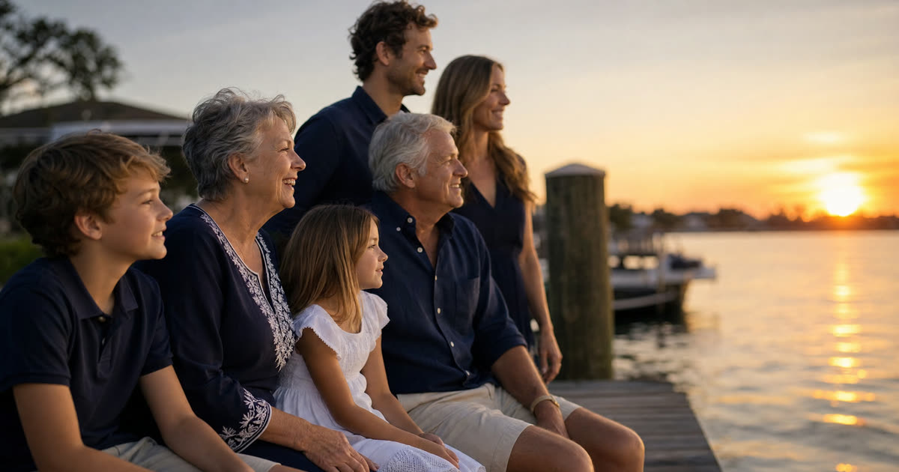

Meet the Alvarez family
The Alvarez family is a composite I use to illustrate a pattern I see often in South Florida, not an actual client. The mother, Rosa, owns a homestead condo in Kendall. Her adult children are spread between Fort Lauderdale and Boca Raton, and one grandchild lives outside the United States. Rosa's estate is not complicated in the way a business owner's might be, but it is complicated in a distinctly South Florida way: a condo with association rules, a homestead with real value attached to it, and heirs in two counties plus one abroad.
A quick two-sentence baseline before we go further: an irrevocable trust is one the person who creates it cannot simply revoke or amend unilaterally, and that loss of control is precisely what lets assets move outside the settlor's estate for creditor protection, Medicaid planning, or certain tax purposes. A revocable trust keeps that control in the settlor's hands during life, which is why it does not offer the same protection but is far easier to live with day to day.
Have this exact situation? Talk it through with a Florida attorney — the 20-minute consultation is free.
Book Free Consult or call (888) 388-8445What is statewide and does not bend by zip code
Every trust question the Alvarez family raised traces back to the same statute regardless of which county's courthouse would eventually be involved. The Florida Trust Code, Chapter 736, governs the creation, administration, and modification of trusts the same way in Miami, Fort Lauderdale, and West Palm Beach. Florida law also presumes a trust is revocable unless its terms expressly say otherwise, a rule that applies uniformly statewide.
Florida does not have a domestic asset protection trust statute. That means a self-settled irrevocable trust, one where Rosa would be both the creator and a beneficiary, generally will not shield her own assets from her own creditors no matter which South Florida county she lives in. Spendthrift provisions can protect what a beneficiary eventually receives, with statutory exceptions, but that protects the children's inheritance, not Rosa's own exposure. None of this shifts based on county lines, and I would tell a family in Naples or Tallahassee the identical thing.
Florida also has no state income tax and no state estate tax, which is true everywhere in the state. The federal estate tax exemption is set at the federal level, not the county level, and I won't guess at today's exact figure here since it adjusts periodically; anyone near that threshold should confirm the current number with an attorney or CPA rather than rely on an old figure.
What actually changes: condos, homestead value, and court volume
What genuinely differs by county is not the trust law itself but the facts on the ground it has to operate around.
- Condo-heavy holdings. Miami-Dade and parts of Broward have a dense concentration of condominium ownership. Moving a condo into a trust, revocable or irrevocable, means checking the association's governing documents and approval process, which vary building to building and are not set by state trust law. This is a step families in single-family-home counties often skip entirely.
- High homestead values. A Kendall condo, a Fort Lauderdale house, and a Boca Raton house can each carry very different market values, but Florida's homestead protections, under Article X, Section 4 and Article VII, Section 6 of the Florida Constitution, and the Save Our Homes assessment cap under F.S. 193.155, apply the same statutory rules regardless of the number on the appraisal. Where value matters locally is in how much is at stake if homestead planning is done incorrectly, particularly the restrictions on devising homestead under F.S. 732.4015 when a surviving spouse or minor child is involved.
- Probate division volume. Miami-Dade's probate division handles a large volume of filings, and so do Broward and Palm Beach to varying degrees. This does not change the law of trusts, but it is one honest reason families choose a properly funded revocable trust: it is designed to let assets pass outside probate altogether, avoiding the queue rather than waiting in a shorter one.
Foreign heirs, bilingual documents, and the grandchild abroad
The Alvarez grandchild living outside the United States raised two separate questions for Rosa, and South Florida's international population makes these come up constantly here.
First, execution formalities. Florida requires wills, and the testamentary aspects of a revocable trust, to be signed with the formalities Florida law demands under F.S. 732.502 and Chapter 732. A trust can be prepared bilingually so a Spanish-speaking client fully understands it, but the signing itself still has to satisfy Florida's witnessing and execution rules no matter what language the document is written in. I tell clients this early: a beautifully translated document that is not signed correctly can create real problems later.
Second, foreign beneficiaries and property. If a beneficiary lives abroad, or if there is any transfer of U.S. real property connected to a foreign person, FIRPTA (the Foreign Investment in Real Property Tax Act) withholding rules can come into play at the federal level. This is a federal tax withholding mechanism, not a Florida trust rule, and it is easy to overlook when a family is focused only on the trust document. Families with any foreign beneficiary or foreign seller in the picture should loop in a tax professional alongside their estate planning attorney.
What the Alvarez family actually did
For Rosa's situation, the family did not need a self-settled irrevocable trust, and it would not have protected her assets from her own creditors under Florida law regardless. Instead, Rosa's plan centered on a revocable living trust holding the condo and her other assets, designed to avoid Miami-Dade probate and to make the eventual transfer to her children in Fort Lauderdale and Boca Raton, and to the grandchild abroad, smoother and more private than a will alone.
An irrevocable trust still had a role, but a narrower one: a separate irrevocable trust for a portion of assets intended purely for the grandchild, with a spendthrift provision to protect that inheritance once distributed, and language allowing future adjustment. Florida law allows an irrevocable trust to be changed in defined ways even after it is signed, including a nonjudicial settlement agreement among interested parties, judicial modification, decanting under F.S. 736.04117, use of a trust protector, or modification with the consent of the settlor and all beneficiaries. That flexibility mattered to Rosa, who did not want a document that could never adapt to a grandchild's changing circumstances overseas.
Frequently Asked Questions
The Truestead Takeaway
For the Alvarez family, the county was never really the deciding factor: Chapter 736 reads the same in Miami-Dade, Broward, and Palm Beach. What decided their plan was the shape of their life, a condo with association rules, a homestead with real value, children in two counties, and a grandchild abroad. Rosa ended up with a revocable trust to avoid probate and keep her privacy, plus a narrow irrevocable trust with spendthrift protection for the grandchild, built with room to change later. If your own family looks something like this, the sensible next step is the same one I'd give anyone: have a Florida attorney review your actual assets, your actual heirs, and your actual county's practical wrinkles before deciding which trust, or combination of trusts, truly fits.
Have a child turning 18? Get the free 18 & Protected packet — the legal documents every Florida 18-year-old needs.
Get the Free PacketTalk to a Florida Attorney
Every family’s situation is different. Schedule a consultation with Arthur Simpson, Esq. to review your plan and your options under Florida law.
Schedule a Consultation →This article is for general informational purposes only and does not constitute legal advice, nor does reading it create an attorney-client relationship. Florida estate, elder, probate, and real estate law are fact-specific and change over time. Consult a licensed Florida attorney about your individual circumstances. Arthur Simpson, Esq. is licensed to practice law in the State of Florida. Attorney advertising.
Talk to a Florida Attorney — Free 20-Minute Consultation
Pick a time below. No obligation, no pressure — just answers.